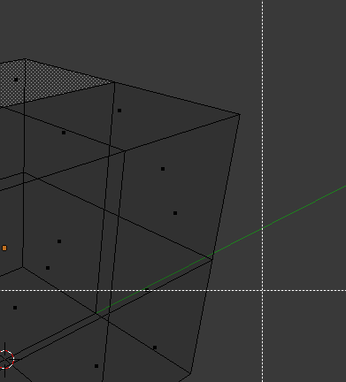

简介¶
选择元素有很多方法，这取决于所处的 网格选择模式 对应的选择工具。首先，我们去了解一下这些模式，然后再来看看基本的选择工具。
选择模式¶
选择模式标题栏控件¶
参考
Ctrl-Tab编辑模式下的选择按钮。
在 编辑模式 下，有三种不同的选择模式。可以通过选择标题栏中的三个按钮之一来进入不同的模式。
- 顶点
在该模式下，顶点绘制为点。
已选的顶点为橙色，未选择的顶点以黑色绘制，活动或最后选定的顶点为白色。
- 边
在该模式下，不绘制顶点。
不一样的是，已选的边以橙色绘制，未选择的边为黑色，而活动或最后选定的边为白色。
- 面
在该模式下，在面的中央绘制选择点，用于选择面。
已选择的面及其所选的点以橙色绘制，未选择的面以黑色绘制，而活动或最后选定的面以白色突出显示。
使用这些模式切换按钮时，可以使用修饰键，参见: 切换选择模式.
几乎所有的工具都可用于这三种网格选择模式。因此你可以在所有模式下 旋转 ， 缩放 ，拉伸 等等。当然，旋转和缩放 单个 顶点没有任何作用( 没有 将轴心点设置到另一个位置的话)，因此一些工具更适合或者更不适合某些模式。
切换选择模式¶
当以“上升”方式(即从简单到更复杂)切换模式时，从 顶点 到 边 和 边 到 面，已选中的部分如果在新模式下形成完整的元素，则仍将被选中。
例如，假设一个面的所有的四个边被选中时，从 边 模式到 面 模式将保持所选中的面。所有选定的部分在新模式下不会形成完整集合的都将被取消选择。
因此，以“下降”方式(即从复杂到简单)切换，所有定义为“高级”元素（如面部）的所有元素(如四边形的四个顶点或边)都会被选中。
仅选择可见元素¶
如果视图着色模式为实体，材质，或者纹理(不是边界框或者线框)，在标题栏选择模式的右边将会显示第四个按钮，看起来像一个方块。
启用时，将无法查看和选择被几何对象挡住的顶点(就像对象是实心的)。这是通过视图的深度缓存限制实现的。
选择工具¶
编辑模式中的选择菜单包含用于选择组件的工具。下文中将做更详细地描述。
框选¶
B ，使用矩形选框选择。

开始。 |

选择。 |

完成。 |
在上图 开始。 中，虚线十字光标表明 框选 已被激活。图 选择。 中，通过使用 LMB 绘制一个矩形来 选择区域 。选择区域仅覆盖三个面的选择手柄。最后，松开 LMB 结束选择；见图. 完成。。
刷选¶
C ，启用圆形区域进行刷选。

之前。 |

之后。 |
图 刷选。 是在 边选择模式下 选择边的例子。一旦边与圆相交，边将被选中。该工具是交互式的，这样在使用 LMB 拖动圆形区域时选择边。
如果要取消选择元素，按住 MMB 并再次单击或拖动。
对于 面 选择模式，通常圆形区域必须与由小像素方块表示的面指示点相交；每个面的中心有一个指示点。


{kind=link}
{kind=link}
{kind=link}
{kind=link}
{kind=link}
{kind=link}
{kind=link}
更多工具¶
- (取消)全选
A - 全选或者取消全选网格组件。
- 反选
Ctrl-I - 选择所有未被选择的几何元素，并取消选择当前选定的组件。
- 随机
- 根据百分比值，选择一组随机的顶点，边或面。
- 扩展选区
Ctrl-NumpadPlus - 通过添加与选定元素相邻的几何元素来扩展选区。
- 缩减选区
Ctrl-NumpadMinus - 取消选择选区边界的几何元素。